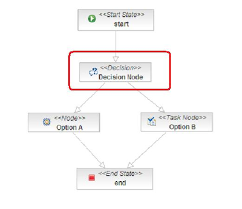

Why you need Business Rules in your workflow
Tom Baeyens has a good post on the jBPM (JBoss workflow) community day that was held at the Guinness brewery in Dublin. As you’d expect, the slides have plenty of pictures of people drinking beer, and one or two pictures of people talking about workflow and business processes. (Do not adjust your TV set. This blogpost is about business rules).
What you might not expect is that Business Rules and Rule Engines were key to one of the presentations on the day. In case you missed How to combine (jBPM) Workflow and (Drools) Business Rules – here’s the summary (with the slideset available on this blogpost).
- Workflow (e.g. JBoss jBPM) is great – it allows you to take spaghetti code and draw it as a workflow diagram (flowchart) so that it can be reviewed by the business (the nice people who pay our wages). You then attach standard (Java) actions to these steps.
- Only problem is when you come to a decision node (the one circled in red below): How do you decide to go left or right (in the workflow)? Normally this is coded in Java – good for us, but hidden from those nice business people (which means that this is more room for errors-in-translation).
- Business Rules allow you to keep those decision making rules in Plain English: When something is true , then do this. That’s it. The rule engine does most of the hard work.
- Integrating Workflow and Rules is easy. Use JBoss Seam (link) or do it by hand (link). And it works on non-JBoss web / app servers such as Websphere, Oracle Application Server, Tomcat and Weblogic.
- Repeat x6 : Use workflow and rules. Use workflow and rules …

Maybe it’s co-incidence but, Tom Baeyens is now using strangely Rules-y like examples over on his workflow blog .
<
p style=”text-align: justify;” mce_style=”text-align: justify;”> In this case Tom talks about task assignment; You may have a step such as ‘Signoff Loan’ in your workflow – but who does this task? Often these rules are complicated (e.g. loans less than 10,000 Dollars go to a junior officer, loans over 10 Million go to a bank president etc.). Business Rules allow you to keep these workflow task assignments in (almost) plain English.